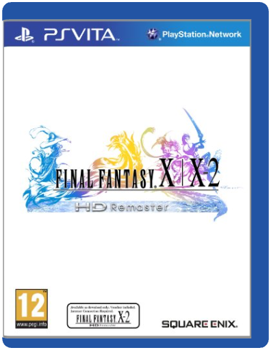
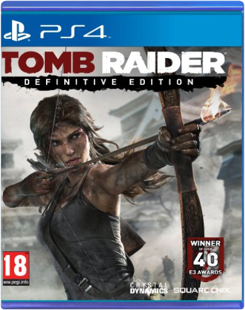
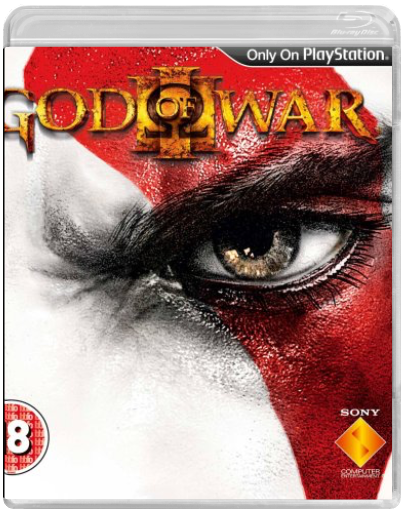
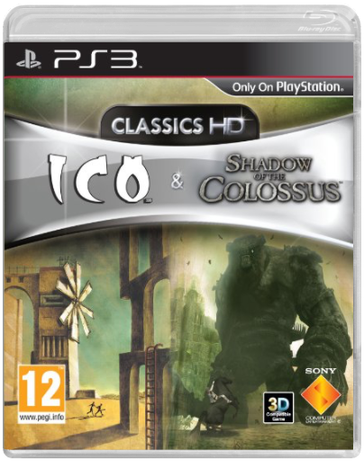
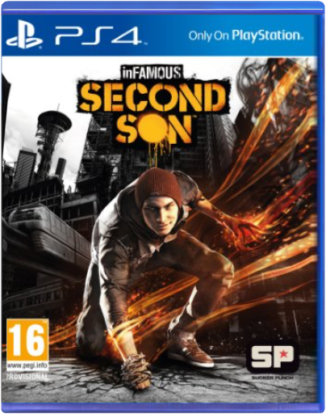
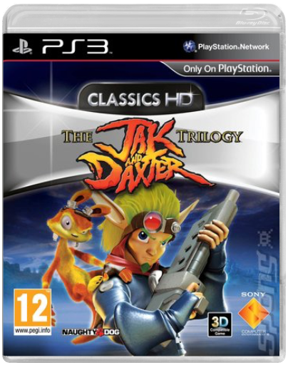
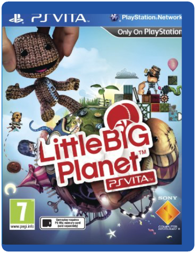

 Final Fantasy X/X-2 HD RemasterSquare Enix Two of the most acclaimed FINAL FANTASY adventures of all time are back. Return to the world of Spira, the sport of Blitzball and fall in love with a cast of fan favourite characters including Tidus and Yuna, looking better than you've ever seen them before.
The creators' original vision is stunningly realised with today's technology to deliver the definitive versions of these classic RPGs.
PlayStation Vita owners can get both games in one package, with FINAL FANTASY X HD Remaster on the PlayStation Vita gamecard and FINAL FANTASY X-2 HD Remaster accessible via a redeemable download code Two Classic RPG's now in HDInternational Editions of Both GamesUpdated SoundtrackFull Trophy SupportCross-Save Support  Tomb Raider Definitive EditionSquare Enix The cinematic action-adventure that forced Lara Croft to grow from an inexperienced young woman into a hardened survivor has been re-built for Xbox One and PS4, featuring an obsessively detailed Lara and a stunningly lifelike world. To survive her first adventure and uncover the islands deadly secret, Lara must endure high-octane combat, customize her weapons and gear, and overcome grueling environments. The Definitive Edition of the critically-acclaimed action-adventure includes digital versions of the Dark Horse comic, Brady games mini-artbook and combines all of the DLC
Square Enix - TOMB RAIDER DEFINITIVE - STANDARD  God of War 3Sony Computer Entertainment GOD OF WAR 3 God of War III is a single player action game, exclusive to the PlayStation 3, and the final installment of the God of War trilogy. Containing signature and addictive God of War gameplay a combination of over-the-top action combat, exploration and puzzle-solving along with an engrossing mythologically inspired storyline and a selection of new weapons and a new weapons system, it is a fitting conclusion to the much praised God of War franchise. True to the series roots, the four pillars of game play - brutal combat, intricate puzzles, exploration of awe-inspiring worlds, and a compelling story - all return. God of War III is the epic conclusion to the Greek mythological trilogy, which will complete Kratos' story that began in the original title for the PlayStation 2. New deadly weapons like the Cestus, powerful metal gauntlets with devastating strength, and other brutal instruments of war that open up ruthless new techniques. The menacing creatures of Greek mythology can now be manipulated against their will, to cross chasms, inflict blind rage against enemies, reveal puzzles and secrets, and as tools of complete annihilation. God of War III picks up exactly where God of War II left off Kratos must take his quest for vengeance to the very stronghold of the Zeus.  Ico & Shadow of the Colossus CollectionSony Computer Entertainment Two of the most critically acclaimed PS2 games of all time are finally making their way to the PlayStation 3. Like God of War 1 and 2, Ico and Shadow Of The Colossus will be getting the remastered HD treatment and will give many gamers who didn't have the chance before to experience these two classics by Team Ico.
Ico and Shadow Of The Colossus on a single Blu-ray discRemastered for HD ResolutionFull PlayStation Network Trophy SupportFull 3D CompatibleRelive two true gaming masterpieces in High Definition on PlayStation 3Immerse yourself in two incredible adventures filled with innovative and groundbreaking combat, strategy, exploration and puzzle solvingTake on the role of a courageous boy and save a princess in ICOBattle mythical beasts In Shadow of the Colossus on a quest to seek the truth about an ancient tale of power hidden in a strange landExplore two of the most critically acclaimed PlayStation 2 adventures, remastered in High Definition on one Blu-ray discDiscover a thrilling new game experience thanks to stereoscopic 3D and trophy support  inFAMOUS: Second SonSony Computer Entertainment inFAMOUS Second Son, a PlayStation 4 exclusive , brings you an action adventure game where surrounded by a society that fears them, superhumans are ruthlessly hunted down and caged by the Department of Unified Protection. Step into a locked-down Seattle as Delsin Rowe, who has recently discovered his superhuman power and is now capable of fighting back against the oppressive DUP. Enjoy your power as you choose how you will push your awesome abilities to the limit and witness the consequences of your actions as they affect the city and people around you.  The Jak and Daxter TrilogySony Computer Entertainment The Jak and Daxter Collection features three Jak and Daxter titles - Jak and Daxter: The Precursor Legacy, Jak II, and Jak 3 - all remastered by Mass Media. With the launch of Jak and Daxter Collection, you'll be able to experience the adventures of Jak and his Daxter in 720p high definition with crisper visuals, smoother gameplay animation and in full stereoscopic 3D.
The Jak and Daxter franchise set a benchmark for the platformer genre with its huge environments and gaming freedom. In fact, it holds seven world records in the Guinness World Records: Gamer's Edition 2008 including the First Seamless 3D World in a Console Game. Remastered in 1080p High Definition for superb visual and crisp picture qualityFully playable in stereoscopic 3D for a thrilling new Jak and Daxter experienceFull PlayStation 3 Trophy supportSmooth gameplay animation running at 60 frames per second. | The Last of Us RemasteredSony Computer Entertainment In The Last Of Us PS4 A pandemic has radically changed known civilisation. Twenty years later, infected humans run wild and survivors are killing each other for food, weapons, or whatever they can get their hands on. Joel, a ruthless survivor, is hired to smuggle a 14 year-old girl, Ellie, out of an oppressive military quarantine zone, but what starts as a simple job soon transforms into a profound journey across the U.S.
What does it take to survive in the brutal yet beautiful world that is The Last of Us? This is what you'lll be faced with at every turn as Ellie and Joel embark on an epic journey that will explore the depths of humanity and push them to the limits of human perseverance.
The population has been decimated. The United States government has collapsed long ago. Twenty years after the outbreak, abandoned cities are slowly reclaimed by nature. Roaming bands of survivors are killing each other for food, weapons, or whatever they can get their hands on.
Joel, a ruthless survivor with few moral lines left to cross, lives in one of the last remaining Quarantine Zones. These walled-off, oppressive cities are run by what’s left of the military. Despite the strict martial law, Joel operates in the black market of the city, smuggling contraband for the right price.
Joel is asked by a dying friend to look after Ellie, a fourteen-year-old girl with courage beyond her years. What starts out as a simple job to deliver Ellie to another Quarantine Zone, soon transforms into a profound journey that will forever change Joel and Ellie.
As they trek across a post-pandemic United States, Joel and Ellie will encounter different factions of survivors that have each found a unique way of dealing with the infected humans, the lack of supplies, and the threat of other survivors. As Joel and Ellie struggle to persevere, they must learn to trust each ot  LittleBigPlanetSony Computer Entertainment Sackboy (or Sackgirl if you choose) is back in LittleBigPlanet for PlayStation Vita, a completely new, mobile adventure, filled with exploration and competition on the fairground planet of Carnivalia, where a mysterious Puppeteer is stealing all of the joy from the LittleBigPlanet universe. Players must travel through a series of themed levels in a storyline driven adventure packed with thrills, spills, and hilarious moments to foil the Puppeteer’s evil plans and bring fun and laughter back to Carnivalia.
Customize Sackboy and the world around him with unique touch and camera Create tools that let you Play with more freedom than ever before. Then discover an endless amount of user-created levels and games created by the LittleBigPlanet community, experiences that players can Share online via the PlayStation Network. LittleBigPlanet for PS Vita will allow users to Play, Create, Share a multitude of different experiences at home or on the road, anytime, anywhere!
Key Features: Join Sackboy in a whole new adventure for the first time on PS Vita and travel through five colourful Carnivalia worlds using all of the PS Vita system’s functions.Interact with the LittleBigPlanet in more ways than ever before using all of the intuitive PS Vita system controls to create and play your own games.Create your own arcade style mini-games to save, share with other LittleBigPlanet players and enjoy wherever you are.Play multiplayer games with up to three friends using multi-touch and the “Pass’n’Play” system.Take the fun online and play alongside up to three of Sackboy’s friends via online or Ad Hoc Mode.Automatically unlock and use any LittleBigPlanet content you’ve previously downloaded on PS3 or PSP (PlayStationPortable). Sly TrilogySony Computer Entertainment THE WORLD'S SNEAKIEST THIEF IS BACK
Test your sneaking skills with the wise-cracking, ring-tailed rapscallion Sly Raccoon as the masked mammal pulls together the old gang to relive some of their greatest ever heists in Sly Trilogy Collection PS Vita Game.
A hit on both PlayStation2 and PlayStation3, this action-adventure trilogy now offers plenty of tricky fun on the run on PlayStation Vita, so you can join Sly's gang wherever you are, and whenever you like.
Guide Sly on a host of daring assignments across the world in the search for valuable artifacts as you scamper through the shadows, outwit security guards and give cops the slip in classic Sly Raccoon style.
Just don't set off any alarm bells! All three classic Sly Cooper Games available to play on PS VitaUnique cel-shaded visual style and a storyline inspired by film noir and comic booksPlayStation Vita Functionality Including Touchscreen and Dual Analogue ControlsStealth, thievery, platform adventure, combat, strategy and exploration with hours of gameplay across three whole games. |


 Made with Delicious Library
Made with Delicious Library